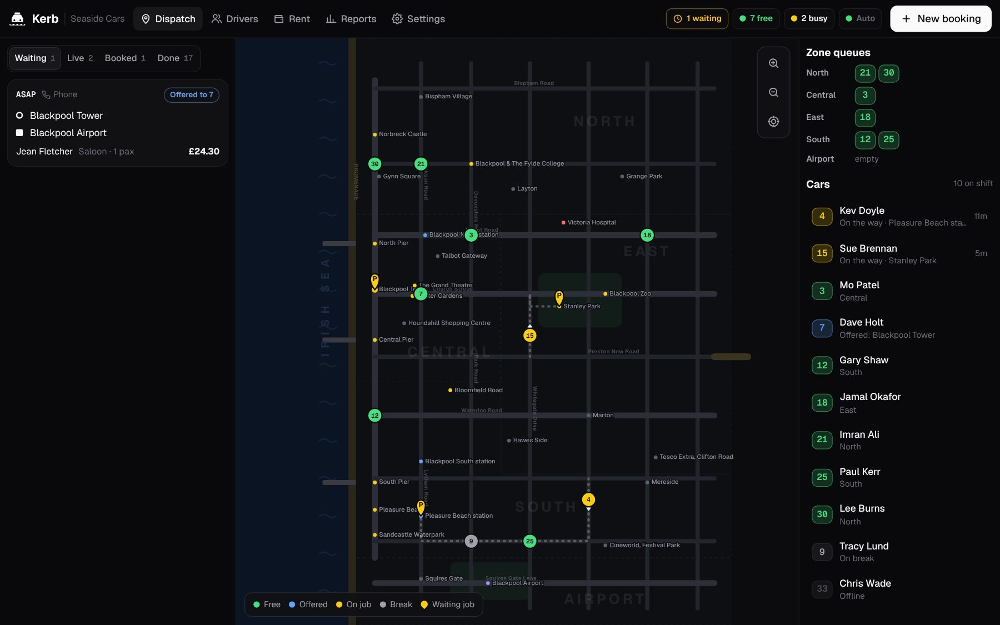
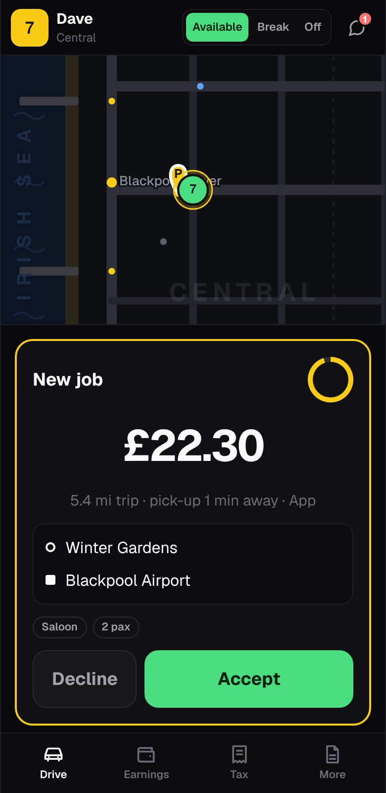

Kerb
1.0Taxi dispatch, driver and booking apps that work together. Built for UK firms with self-employed drivers, and for the people who actually use it all day.


The old apps were built for the office. Kerb is built for everyone.
Drivers
- Jobs pop up with no fare
- See the fare and pick-up time before accepting
- No idea what you've earned
- Cash and card totals for the day, week and tax year
- Expenses, mileage and a tax summary for your accountant
- Document reminders and an SOS button
Dispatch
- Cluttered screens and slow phone bookings
- Book a phone job in seconds; returning callers fill in automatically
- Live map with zone queues and auto-dispatch
- Late jobs turn red so nothing gets forgotten
- Message any car, see SOS alerts instantly
Customers
- "Where's my taxi?" phone calls
- Live tracking with the driver, car and reg
- Price up front, pay the driver by cash or card
- Book by message, like texting the office
- Rate the driver and get a receipt
Three apps. One live picture.
Real street map
Every Blackpool street, named, from OpenStreetMap. Zoom to street level, tilt to 3D, drop a pin on any address or postcode.
Auto-dispatch
First in the zone queue or nearest car, your choice. Offers time out and move on automatically.
Fast phone bookings
Type a number and returning customers fill in. 2,500 real streets and 3,000 pubs, hotels and shops autocomplete.
Book by message
Customers text "Tower to the airport at 8pm for 3" and get a price back. Reply YES to book.
Live tracking
Customers see the car coming, the driver's name, car and reg, and a countdown.
Cash or card
Drivers keep their own card machines. They tap Cash or Card at drop-off so the records match.
Earnings and tax
Takings, expenses, mileage and a CSV for the accountant. Actual costs vs 45p a mile, side by side.
Weekly rent
See who's paid this week and who hasn't. Drivers see what's due in their app.
Driver documents
Badge, licence, insurance, MOT and plate expiry dates with warnings before they lapse.
Event pricing
Switch on a boost for the Illuminations or match days. Night and Sunday rates built in.
NHS and account work
Hospitals, councils and hotels book on their own page with a reference. Regular runs like dialysis and school trips book themselves. Monthly invoice in one click.
Caller ID
A ringing call pops up with the caller's name, saved places, usual trip and any live job. One tap to book.
Turn-by-turn
Drivers get street-by-street directions on the map, or one tap to Google Maps or Waze. Next job offered before drop-off.
Busy-night planner
Forecasts how many cars you need each night from your own history plus gigs, matches and the Illuminations.
Reports
Bookings by hour, where they come from, busiest pick-ups, pick-up times and each driver's week.
Driver safety
One tap SOS from the driver app sounds an alarm in the office with the car's location.
Your app, your money, your records.
Self-employed drivers get the tools the old systems never gave them. Big buttons, works on any Android or iPhone, and it tells you what you've earned.
Go available
See your zone and your place in the queue. Break and Off are one tap away.
Take the job
Fare, distance and pick-up time on the offer. Navigate, call the customer, mark outside, on board, done.
Get paid
Tap Cash or Card. Your takings, rent and tax estimate update instantly.
Per car, per week. Like your drivers' rent.
- Dispatch console and live map
- Driver app with earnings and tax
- Customer booking app
- Rent tracking and documents
- Everything in Starter
- Book by message (WhatsApp style)
- Website booking widget
- Reports and business accounts
- 100+ cars or several firms
- AI phone answering at busy times
- Your own branded customer app
- Card machine links (SumUp, Zettle)
First month free. No setup fee. No contract. A 40-car firm on Starter pays £160 a week.
Live in a day.
Send us your lists
Drivers, cars and regular customers from a spreadsheet. We load them in for you.
Drivers install the app
A link by text. They pick their car and they're on. No new phones needed.
Go live
Keep your phone numbers. Run Kerb side by side with your old system until you're happy.
Our drivers use their own card machines. Does that work?
Yes. Customers pay the driver by cash or card, and the driver taps which at drop-off. Kerb never touches the money. Links to SumUp and Zettle readers are coming so the fare goes straight to the machine.
How do we charge drivers?
Set each driver's weekly rent. The office sees who's paid, and drivers see what's due in their earnings screen.
Does it do private hire and hackney?
It's built around pre-booked private hire, with zone queues for ranks. Hackney meters and council-specific rules can be added per area.
What phones do drivers need?
Any recent Android phone or iPhone. The app is built for big thumbs, bright sun and patchy signal.
Is the tax tracker official advice?
No. It gives drivers clear totals and estimates, and a file for their accountant. It doesn't replace an accountant or HMRC guidance.
Who owns the data?
You do. Export your jobs, drivers and customers at any time. We don't sell data or show ads.